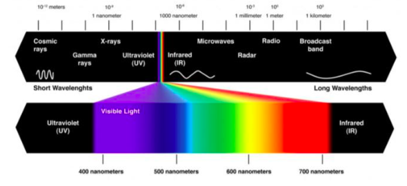

Odontodactylus scyllarus
Classificação Científica
| Reino |
Filo |
Subfilo |
Classe |
Subclasse |
Ordem |
| Animalia |
Arthro |
Crustacea |
Malacostraca |
Hoplocariada |
Stomatopoda |
Eyes are testaments to evolution’s creativity. They all do the
same basic things—detect light, and convert it into electrical
signals—but in such a wondrous variety of ways. There are single
and compound eyes, bifocal lenses and rocky ones, mirrors and
optic fibres. And there are eyes that are so alien, so constantly
surprising, that after decades of research, scientists have only
just about figured out how they work, let alone why they evolved
that way. To find them, you need to go for a swim.

Descrição
Os estomatópodes são predadores ativos que caçam presas com o
auxílio de um sentido de visão muito apurado e capaz de
interpretar polarização no espectro ultravioleta e infravermelho).
Apresentam uma grande variação de tamanho, que pode ir de poucos
milímetros até aproximadamente 40 cm nas espécies maiores. Eles
vivem em fundo consolidado, lodoso ou ainda arenoso, onde cavam
seus buracos ou aproveitam-se dos orifícios deixados por outros
animais para neles se instalar. São animais exclusivamente
carnívoros, alimentando-se de camarões, caranguejos, moluscos,
peixes e até mesmo outros da mesma ordem. O segundo par de patas,
muito desenvolvido, é usado tanto para atacar a presa como para se
defender. O urópodo, quando aberto, também funciona para defesa,
como um escudo, fechando a galeria em que o animal esteja
instalado. A fêmea desova no local onde se abriga e, em caso de
perigo, enrola os ovos como uma bola, prendendo-os junto ao corpo
até encontrar um abrigo mais protegido. Também conhecidas como
esquilas ou lagosta-boxeadora, espalhadas pelas costas dos mares
tropicais e subtropicais. Além das patas, elas apresentam uma
silhueta característica, devido ao grande comprimento
aparentemente de seu abdómen. Os ovos ficam ligados por uma massa
gelatinosa que a mãe carrega contra o ventre até que eclodem,
limpando-os sem parar. São animais que apresentam comportamentos
sociais muito variados, desde ameaças visuais contra predadores
até comportamentos de côrte. De acordo com a anatomia da sua pata
raptorial é possível distinguir entre dois grupos funcionais, as
perfuradoras (spearers) ou as esmagadoras (smashers), sendo que
cada um dos tipos apresenta sua própria variação comportamental e
até mesmo de habitat. As maiores esmagadoras, tais como exemplares
de Odontodactylus scyllarus, são capazes de desferir um dos mais
rápidos e violentos golpes do reino animal, um soco que pode
apresentar a velocidade de um tiro calibre .22 (equivalente a 720
km/h) e uma pressão de impacto de 600 N/cm².[3] Essa força
esmagadora é a responsável pelo seu título de "lagosta-boxeadora"
e é capaz de facilmente quebrar a carapaça de um caranguejo, as
conchas duras e calcificadas de gastrópodes ou até mesmo quebrar o
vidro reforçado de um aquário.[4][5] Estomatópodes podem ser
encontrados em quase todo o litoral brasileiro, mas não são
animais fáceis de se observar pelos seus hábitos mais furtivos.
Devem ser manuseados com muita cautela pois são animais preparados
para se defender com força, caso sejam incomodados.

Visão
Esses animais possuem o mais complexo sistema de visão de cores do
mundo animal, pois enxergam 12 cores primárias, correspondentes
aos 12 pigmentos distintos presentes em sua retina. Nossos olhos
possuem três tipos desses receptores - que correspondem à luz
azul, verde e vermelha -, que nos permitem perceber o espectro de
cores que vemos. Os cães contam com apenas dois tipos de cones
(verde e azul), e é por isso que eles vêm tons de azul, verde e um
pouco de amarelo. Muitos anfíbios, répteis, aves e insetos possuem
quatro tipo de cones, o que significa que espécies dessas classes
conseguem ver cores que o nosso cérebro é incapaz de processar.
Algumas espécies específicas de borboletas e possivelmente pombos
possuem cinco cones de percepção de cor, o que aumenta ainda mais
a quantidade de pigmentos que eles são capazes de perceber. O
sistema de visão dos estomatópodes possui doze cones sensíveis à
luz e outros quatro que filtram a luz (16 cones no total), o que
lhes permite ver cores polarizadas e imagens multiespectrais.[6]
Como cada cone pode ver cerca de 100 cores, os estomatópodes são
capazes de ver 1024 cores, ou seja, 1 septilhão de cores. Em
comparação, o olho humano vê 106 cores, ou seja, 1 milhão de cores
apenas. A visão dos estomatópodes é sensível à luz ultravioleta,
mas ainda é desconhecido se ela pode distinguir a luz
infravermelha.[7]